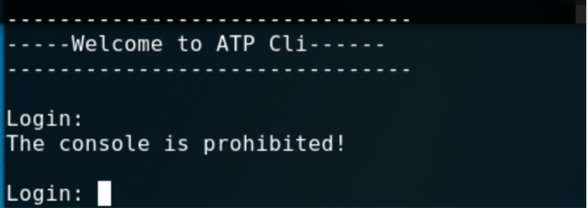
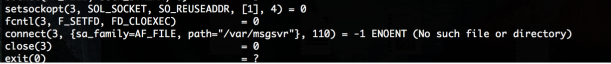
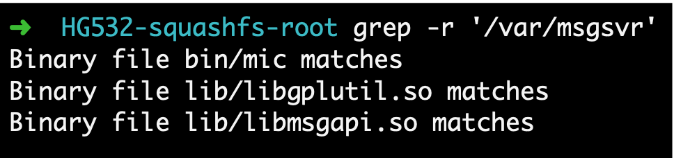
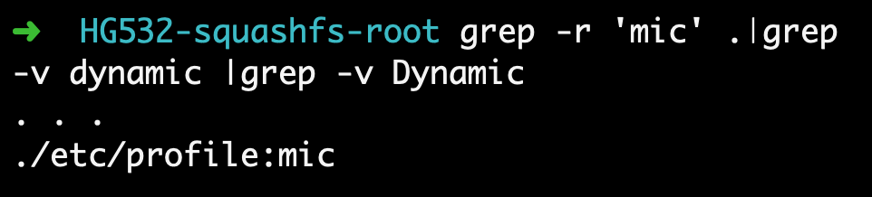
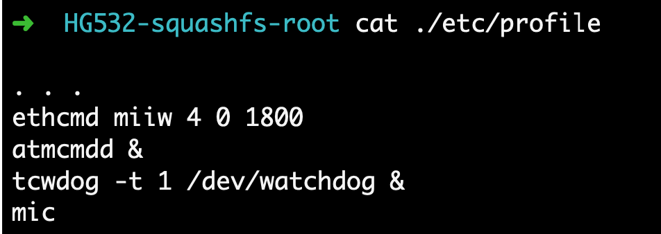
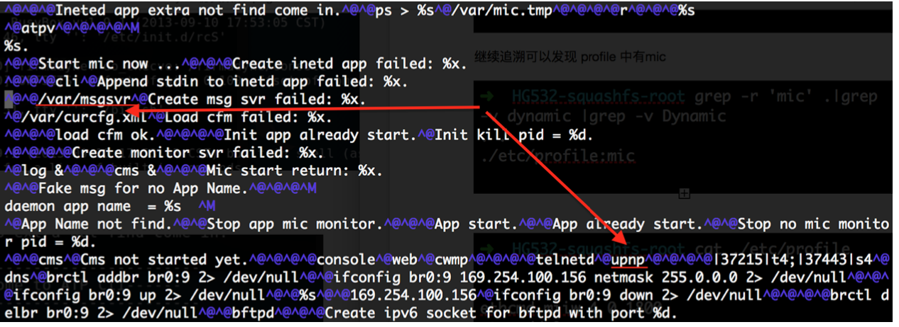
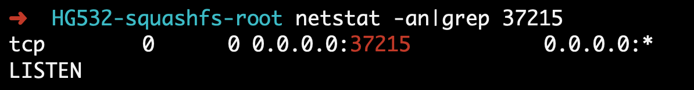
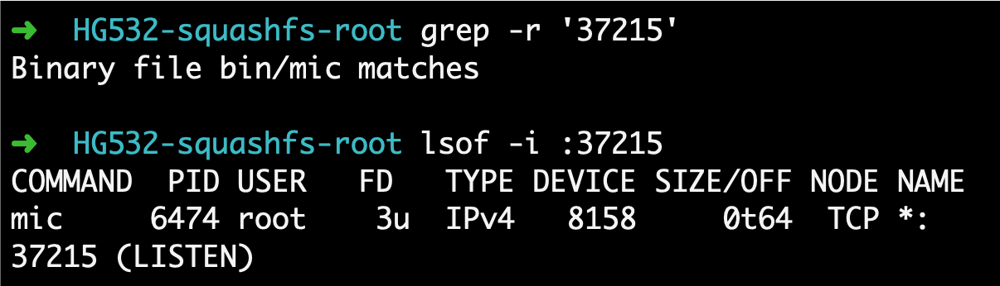

使⽤用firmadyne 仿真整个⽂件系统时， ⽆法进入到console 中，console 登陆有限制
仿真mips架构的debian系统， 将HG532e的⽂文件系统传到debian中，
checkpoint 中 https://research.checkpoint.com/good-zero-day-skiddie/ 提到漏洞存在于upup 服务中, 该路由器的UPnP服务中有⼀项为DeviceUpgrade，通过请求 /ctrlt/DeviceUpgrade_1 进行固件的升级
使⽤chroot 运行upnp ， 没有任何提示，查看端口也并没打开，
使用 strace(system call trace)进行跟踪，发现缺少⽂件
搜索一下，应该是依赖于 mic 二进制⽂文件
继续追溯可以发现 profile 中有mic
 对mic ⼆进制进行 msgsvr 关键字搜索: 可以发现和上面strace 的报错信息对应起来。
运行 mic 时 ，会⽣成对应 /var/msgsvr 不过会进入 ATP cli 从⽽而导致⽆法执⾏其他命令， 不过我们可以通过新建个ssh session 执行 mic 绕过这个限制。
补充，bin/下的cli 是 ATP cli ， 运行mic时会执行cli?

现在回过头来可以发现， 打开37215的端口是⼆进制程序是 mic

使⽤用exploit上的poc进行尝试后，发现确实可以完成命令注入，但是并不是所有命令都能正确执行.
➜ Documents Serving HTTP on 0.0.0.0 port 8000 ...
192.168.1.108 - - [24/Jan/2018 09:17:42] "GET /a HTTP/1.1"
200 -
根据爆出的信息进行反推，找出upgrade action 存在的位置， 存在 system(a0) 命令， 查一下snprintf的调⽤
snprintf(char * restrict str, size_t size, const char
* restrict format, ...);
对用户输入未过滤导致命令注入
snprint( a0,0x400,”upg -g -U %s -t '1 Firmware Upgrade Image' -c upnp -r %s -d -“,a3)
Referer:
https://research.checkpoint.com/good-zero-day-skiddie/